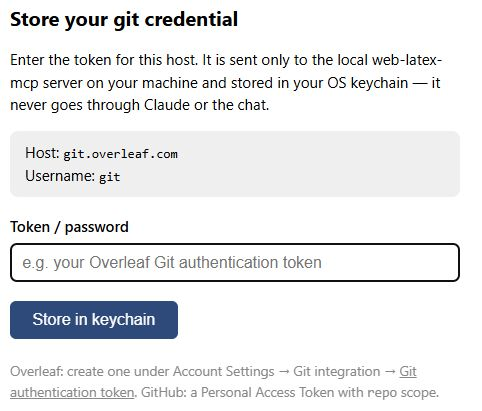
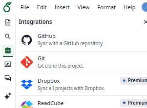
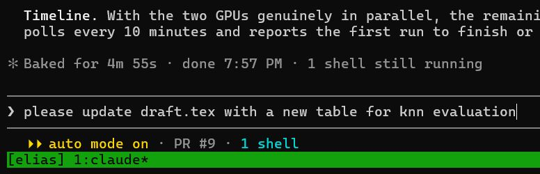
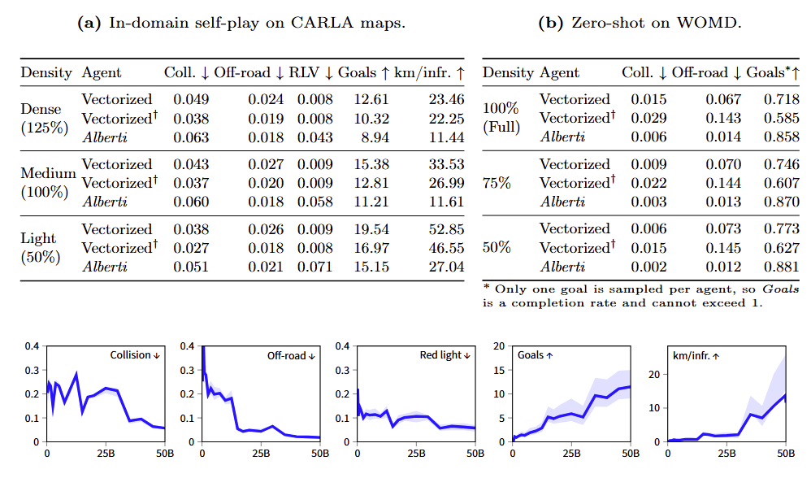
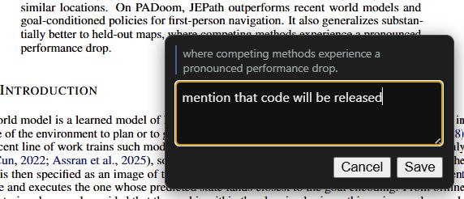
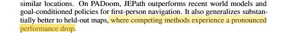
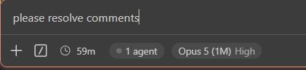
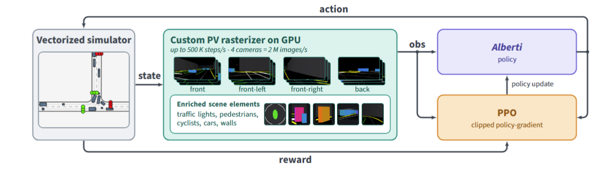
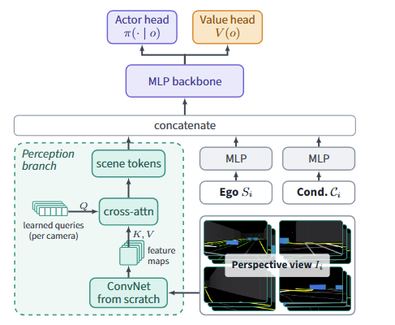

public beta · v0.7.1 · github.com/elias-ramzi/WebLatexMCP
Motivation
No more copy-pasting paragraphs between a chat tab and Overleaf. Claude works on the
real project: it reads the .tex, edits it, compiles it, and looks at the
typeset page.
Rewrite the paragraph you point at; turn experiment results into a table or a figure.
Search and check references against DBLP, Crossref and OpenAlex — never typed from memory.
Select text in the PDF, leave a note, and Claude edits the matching source line.
Bundled skills proofread, review against a writing guide, and prepare the arXiv upload.
You stay the author: every change comes back as a diff, and nothing reaches Overleaf until you say so.
Overview
latexmk or tectonicPull is fast-forward only; push refuses when behind. A conflict comes back to you to resolve.
Kept in your OS keychain — never in .git/config, never in the chat,
scrubbed from output.
Several Claude sessions can share one clone; each commit holds only its own session's lines.
Getting started
web-latex-mcp.mcpb: one-click
install.


Getting started
gh optional
TeX is optional: editing, syncing and the PDF viewer work without
it. Only compile needs a backend.
Not sure what is installed? Ask Claude to run doctor. A missing
default backend falls back to the other one — and says so; a backend you chose
never does.
Basic usage
The loop behind every request:
Instead of copy-pasting in the browser: Claude edits the file itself, and you read the diff.
Use case
The Claude Code session that launched and watched the runs on the cluster (Jean Zay) also has the paper.
draft.tex.💡 Draw figures in TikZ: Claude can redesign them, and collaborators can edit them in Overleaf.


No numbers copied by hand — from the run to the paper in one session.
Review
127.0.0.1 — the PDF never leaves your machine.
file:line.


Figures


A figure is source, not a picture — every revision is a diff you can review.
References
search_references asks DBLP, then Crossref, then OpenAlex. A substitute is always reported; a source you pin is never swapped.
add_citation re-fetches the canonical BibTeX from the
service, server-side. The entry text never comes from the model; plain edits to a
.bib are refused without your explicit OK.
check_citations finds undefined, uncited, duplicate and
incomplete entries — in a .bib, a thebibliography, or a
prose list. /verify-citations checks each title, author list, venue and
year.
dblp.org now sits behind an anti-bot challenge, so today Crossref and OpenAlex do most of the work.
Ongoing work
An independent panel of Claude models reviews the paper; a triage agent checks every finding against the paper and writes one review. /review-paper my-paper NeurIPS
No reviewer sees another's report, so agreement between models means something.
A finding is kept only once it is checked in the paper — appendix included.
It reviews, never edits: the reports stay in a local, git-excluded folder.
Ongoing — /review-paper is on dev, not yet
released.
Skills
Strip comments and \todos for the arXiv upload.
Audit every reference and write a citation report.
Deduplicate, rename keys, harmonise venues.
Per-section files, one float per file, one sentence per line.
Hunt typos: spelling, doubled words, agreement, escapes.
Review the paper against the writing guide.
A pre-submission review, from a multi-model panel.
A local cheat-sheet so the next session starts fast.
Turn a session into ready-to-file issues.
Each skill stops at the diff · ships with the server as an MCP prompt, in any client · scanned by NVIDIA SkillSpector on every PR.
Contributing
Run /session-feedback at the end of a session: it writes ready-to-file
issues, scrubbed of anything private, and files nothing without your yes.
The repo accepts PRs. Tests use a local bare repo — no secrets, no network. CI runs on Linux, macOS and Windows.
Open an issue with the bug-report or feature-request form. Bug reports are hugely welcome.
Take home message
Claude reads, edits and compiles the project itself, and looks at the typeset page.
BibTeX comes from Crossref, OpenAlex or DBLP, never from the model.
Comment on the page like a reviewer; Claude finds the source line and fixes it.
Ask Claude what web-latex-mcp can do — skills, peer review, arXiv cleanup, and more.